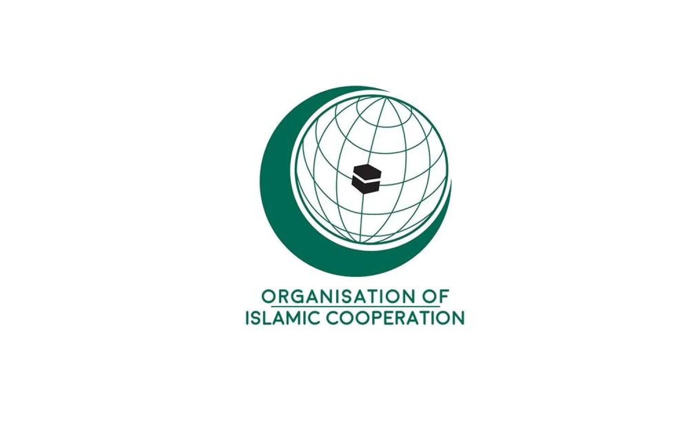

OIC Nedir?
İslam İşbirliği Teşkilatı (OIC)
İslam İşbirliği Teşkilatı (Organization of Islamic Cooperation - OIC), İslam dünyasındaki ülkeler arasında iş birliğini güçlendirmek, ortak meselelerde dayanışma sağlamak ve uluslararası alanda ortak bir duruş geliştirmek amacıyla kurulmuş uluslararası bir teşkilattır.
1969 yılında kurulan bu yapı; siyasi, ekonomik, kültürel ve sosyal alanlarda üye devletler arasında iş birliğini teşvik eder. OIC, barış, adalet, diplomasi ve ortak hareket anlayışı çerçevesinde faaliyet göstermektedir.